Vancouver to Mission : 66 km
Hello and welcome to my website describing my journey across Canada on my bicycle. I have three goals for this website. My first goal is to inspire those who are curious about touring to partake in a bike tour adventure. My second goal is to provide information and insights for those already planning a trip - I hope I will leave you with the impression that it's not that hard to plan (just get your gear and go). My third goal is to document and remember my travels.
If you have any questions, comments or a simple 'Hello World' then please reach out to me at contact AT zonov DOT ca. Don't be a lurker, I really want to hear what you think about it all.
Website is currently a work in progress. Here is the progress log:
| Content | Added on |
|---|---|
| Day 1,2,3,4,5 | October 18th, 2019 |
| Day 6,7 | October 20th, 2019 |
| Day 8,9 | October 23rd, 2019 |
| Day 10,11,scroll map | October 25th, 2019 |
| Day 12,13,14, budget page | October 27th, 2019 |
| Day 15,16,17,18,19,20 | November 2, 2019 |
| Day 21,22,23,24,25,26,27 | November 20, 2019 |
| Day 28,29,30,31,32,33,34,35,36,37 | December 8, 2019 |
Budget and Equipment I used during the trip
A fairly detailed breakdown of the costs of everything and the various equipment I used all to be found here.
Travel Map
Insights, thoughts, pictures, fellow travellers encountered throughout my trip can be found in my day by day breakdowns.
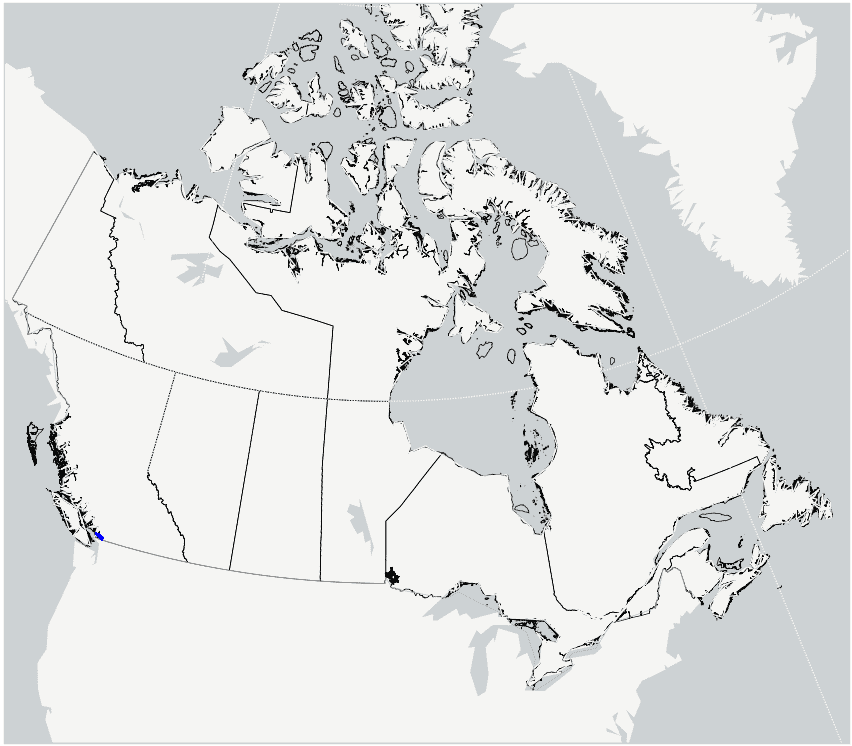
Day 1: The Beginning
Day 2: Short Ride To Hope
Mission to Hope : 98 km
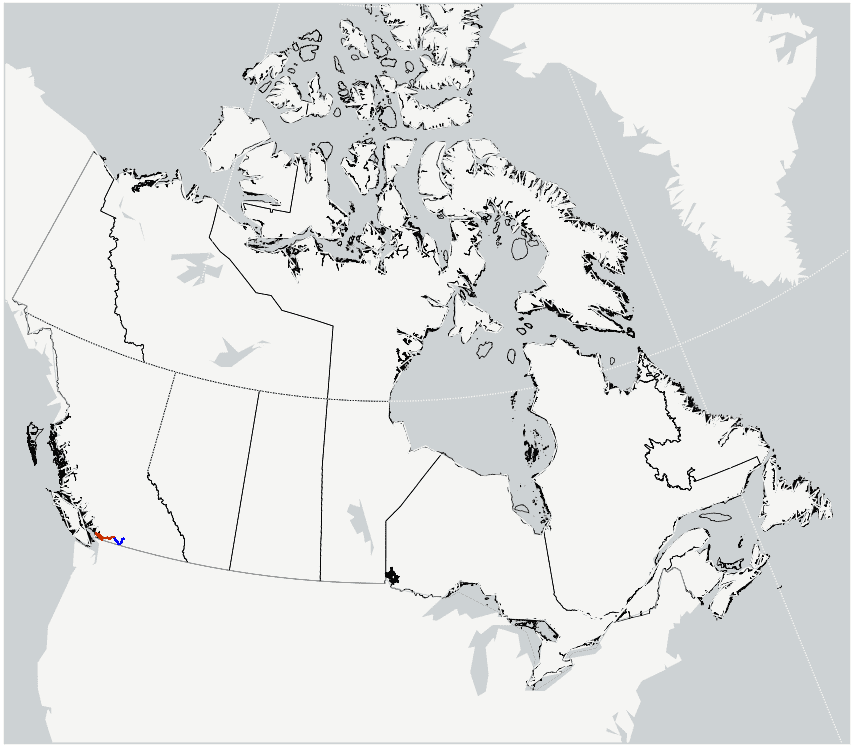
Day 3: Stronger than the Guide Book
Hope to Princeton : 132 km
Day 4: In the Desert
Princeton to Kelowna : 159 km
Day 5: Out of the Desert
Kelowna to Sicamous : 144 km
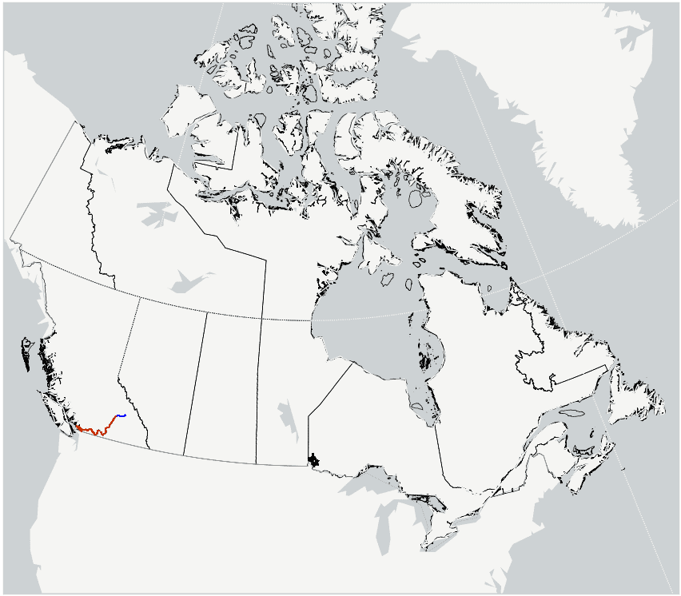
Day 6: Biking through the Rain
Sicamous to Canyon Hot Springs : 100 km
Day 7: To Golden
Canyon Hot Springs to Golden : 116 km
Day 8: Best Day on the Road
Golden to Banff : 146 km
Day 9: In Calgary for some rest
Banff to Calgary : 128 km
Day 10: Praries ahead!
Calgary to Bassano : 142 km
Day 11: Cool clouds
Bassano to Medicine Hat : 156 km
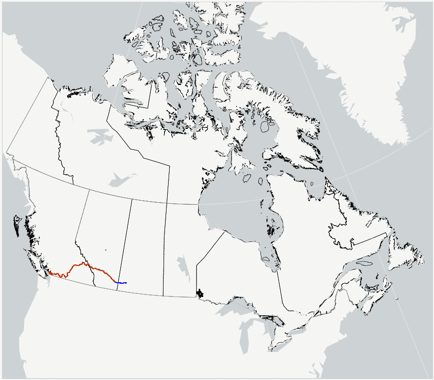
Day 12: Saskatchewan
Medicine Hat to Gull Lake : 172 km
Day 13: Salt Mountains and Pretty Birds
Gull Lake to Chaplin : 143 km

Day 14: Visiting Small Towns
Chaplin to Regina : 155 km
Day 15: Another Gopher
Regina to Melville : 159 km
Day 16: Crushing
Melville to Dauphin : 214 km
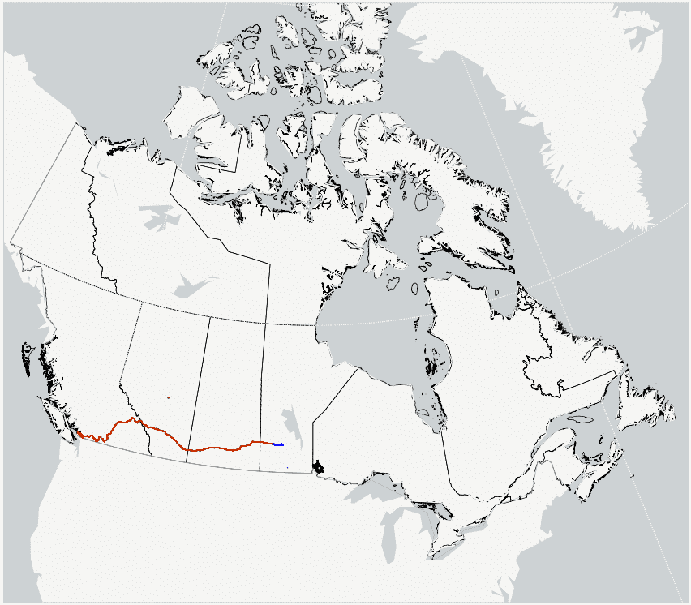
Day 17: To The Narrows
Dauphin to The Narrows : 116 km
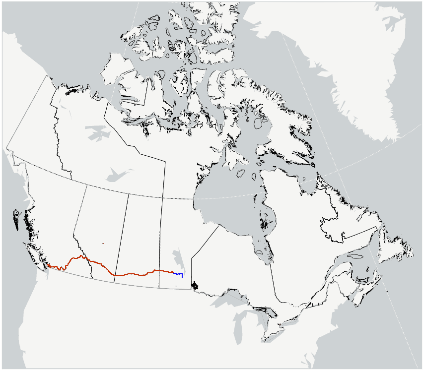
Day 18: To the beach
The Narrows to Winnipeg Beach : 197 km
Day 19: Best and Worst Stretch of Road
Winnipeg Beach to Caddy Lake : 186 km
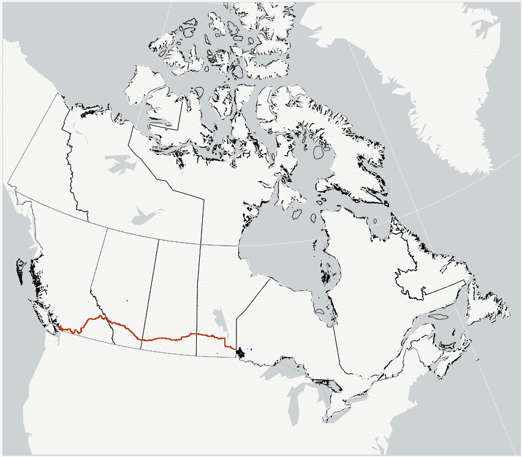
Day 20: Home Ice Advantage
Caddy Lake to Dryden : 203 km
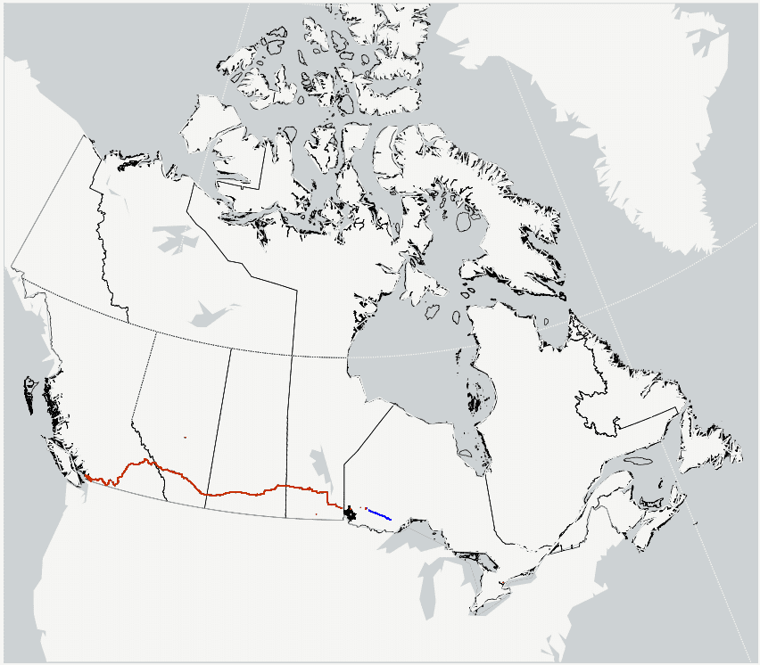
Day 21: 231km bike ride
Dryden to Savanne River Resort : 231 km
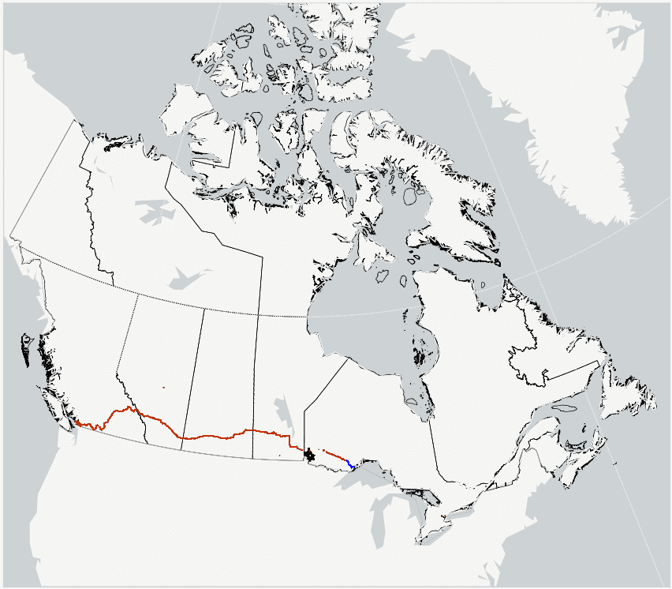
Day 22: Fall from grace. Man Murdered by Headwind.
Savanne River Resort to Thunder Bay : 121 km
Day 23: Smallest Canadian Tire
Thuner Bay to Nipigon : 114 km
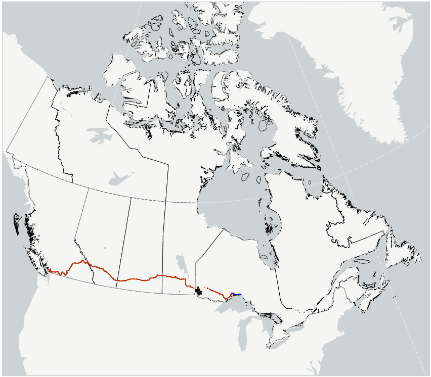
Day 24: Hilly Day in Ontario
Nipigon to Neys Provincial Park : 160 km
Day 25: Meeting Fellow Travellers
Neys Provincial Park to White River : 116 km
Day 26: Biking Together
White River to Agawa Bay Campground : 178 km
Day 27: Made it to a Big City
Agawa Bay Campground to Sault Ste. Marie : 137 km
Day 28: Side Roads
Sault Ste. Marie to Blind River : 152 km
Day 29: Giant Pepsi Can - Is this clickbait? An analysis.
Blind River to Goat Island : 146 km
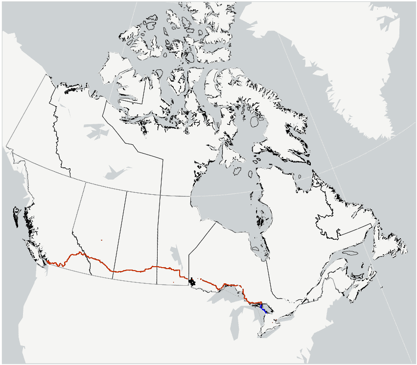
Day 30: Sneaking Around
Goat Island to Wiarton : 143 km
Day 31: The Push Home
Wiarton to Waterloo : 205 km
Day 32: Second half of the trip
Oshawa to Cobourg East Campground : 93 km
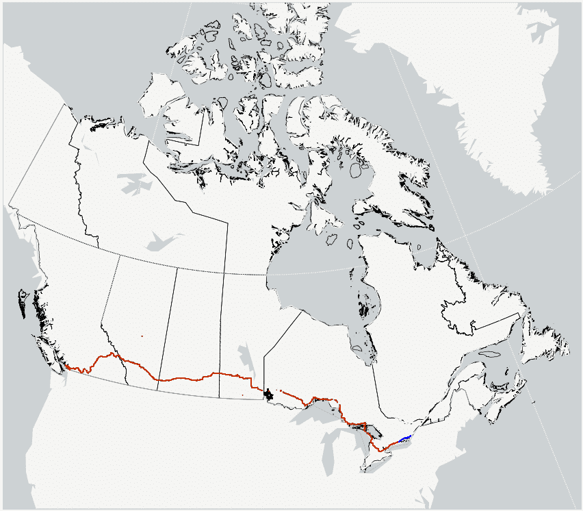
Day 33: Sun, Beer and Squirells
Cobourg East Campground to Pinecrest Resort : 164 km
Day 34: Beautiful bike path
Pinecrest Resort to Lancaster Park : 187 km

Day 35: Finally out of Ontario
Lancaster Park to Montreal : 71 km
Day 36: Churches of Quebec
Montreal to Trois-Rivieres : 106 km

Day 37: Quebec City
Trois-Rivieres to Quebec City : 125 km